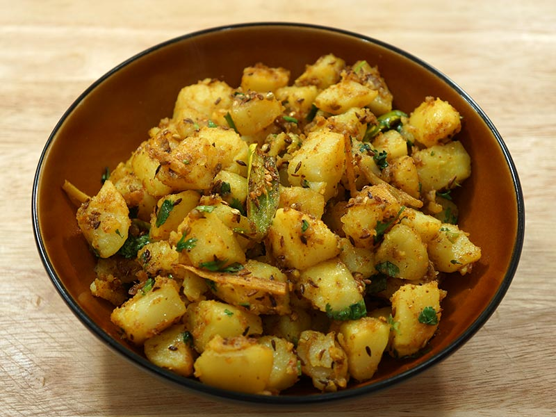

Aloo Zeera

Description
eera Aloo translates to Cumin Potatoes. 'Aloo' in Hindi translates to Potatoes and its a perfect name for this spciy and flavourful dish. With
just basic ingredients you can get Jeera Aloo ready in just few mins time and do not underestimate the dish it tastes so delicious.
Jeera Aloo serves as a great sidedish for Roti, Phulka, Chapathi or even with rice, dal or variety rice dishes too. It is a fantastic blend of spices along with cumin, ginger, green chillies along with basic spice powders, as a final touch adding kasoori methi and coriander leaves makes this dish soo flavourful.
Ingredients
- 4 medium sized potatoes
- 2 tablespoon oil
- 2 teaspoon cumin seeds jeera
- 2 nos green chillies finely chopped
- 1 teaspoon ginger finely chopped
- 1/4 teaspoon turmeric powder
- 1 teaspoon kashmiri red chilli powder
- 1/2 teaspoon coriander powder
- 1/2 teaspoon chat masala powder
- 1 tablespoon coriander leaves
Steps
- Rinse potatoes well to get of dirt and mud and Rub and wash it atleast 2-3 times. Then add 4 medium sized potatoes to a pressure cooker. Add water till half immersing level atleast.
- Pressure cook for 2 whistles. You can choose to boil or steam potatoes too. Make sure it is soft but not mushy.
- Remove the potatoes from the cooker and add it to a bowl containing cold water.
- Once it becomes warm peel off the skin from the potatoes and Cut into small cubes.
- Heat 2 tablespoon cooking oil and add 2 teaspoon cumin seeds let it splutter. Take care not to burn it so oil heat should be just right.
- Add 1 teaspoon ginger finely chopped and 2 small green chillies finely chopped. Saute for few seconds.
- Now add boiled cubed potatoes along with salt, 1/4 teaspoon turmeric powder, 1 teaspoon kashmiri red chilli powder, 1/2 teaspoon coriander powder and 1/2 teaspoon chat masala powder.
- Mix it well. Cook for 2 mins in low flame – take care not to burn the masalas.
- dd 1 tablespoon coriander leaves.
- Give a quick mix and switch off. and it is ready